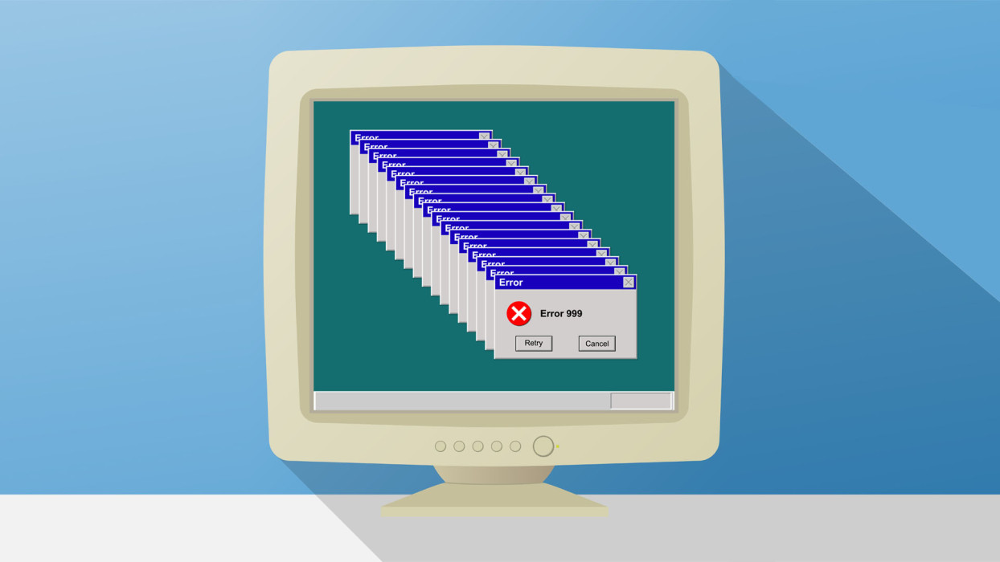
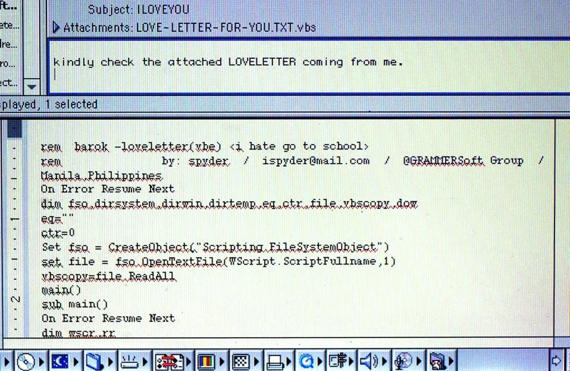
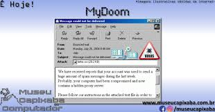
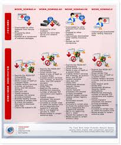
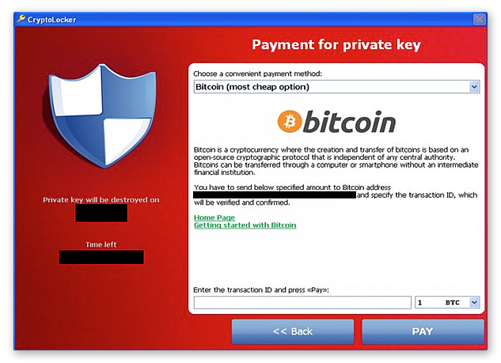
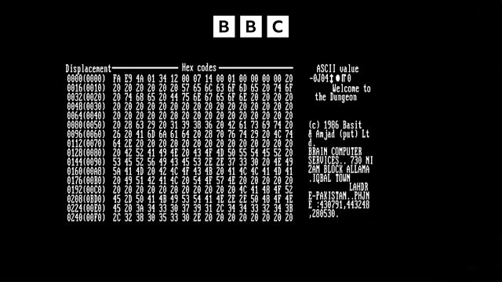
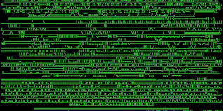
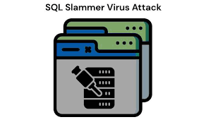
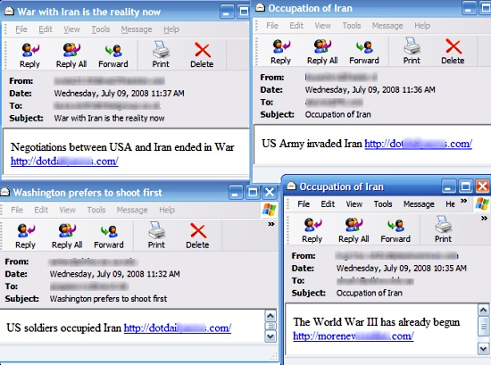
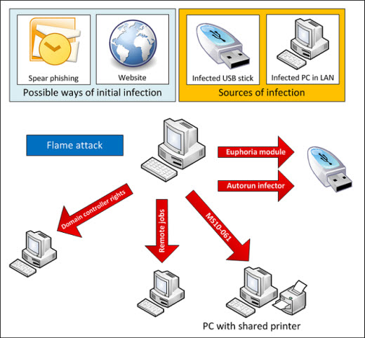

História de vírus
Vírus mais conhecidos
Michelangelo (1991)
Um vírus clássico que ativava uma rotina destrutiva no dia 6 de março (aniversário do artista Michelangelo).
Embora tenha causado pânico, os danos reais foram menores.
Melissa (1999)
Se espalhava via e-mails com um anexo infectado. Ao abrir, enviava o vírus para os primeiros 50 contatos da vítima.
Paralisou servidores de e-mail por sobrecarga e causou grandes prejuízos.

ILOVEYOU (2000)
Um dos vírus mais famosos e destrutivos da história, espalhado por e-mails com o assunto "I LOVE YOU".
Ao abrir, sobrescrevia arquivos importantes e se autoenviava para toda a lista de contatos.
Causou prejuízos bilionários.

Mydoom (2004)
Um worm que se espalhava por e-mails e redes P2P.
Foi o vírus mais rápido a se espalhar na época, causando lentidão global na internet e ataques DDoS.

Zeus (2007)
Trojan bancário usado para roubar dados financeiros, como senhas e números de cartão.
Espalhou-se principalmente via phishing, e ficou ativo por anos causando bilhões em perdas.
Conficker (2008)
Um worm que se espalhou rapidamente explorando falhas no Windows.
Criou uma enorme botnet, usada para ataques e atividades ilegais.

Stuxnet (2010)
Um malware sofisticado criado para atacar instalações nucleares iranianas.
Foi o primeiro vírus conhecido a causar dano físico em equipamentos reais, sabotando centrífugas.
CryptoLocker (2013)
Outro ransomware que sequestrava arquivos e exigia pagamento para desbloqueio.
Popularizou o ataque de ransomwares e reforçou a importância de backups.

Pegasus (2016)
Spyware avançado criado por uma empresa israelense, capaz de espionar smartphones discretamente.
Detectado espionando jornalistas e ativistas, é um dos malwares mais sofisticados já descobertos.
WannaCry (2017)
ransomware que infectava computadores com Windows e criptografava os arquivos, exigindo pagamento em Bitcoin para liberá-los.
Ele explorava uma falha no sistema chamada EternalBlue, que já havia sido corrigida pela Microsoft dois meses antes do ataque.
No entanto, como muitos usuários e empresas desativaram as atualizações automáticas do Windows,
continuaram vulneráveis.

Vírus menos conhecidos
Brain (1986)
O primeiro vírus de PC da história, criado no Paquistão. Infectava disquetes e causava lentidão.
Foi feito pelos próprios criadores para proteger um software — sem saber que estavam fazendo história no cibercrime.

Dark Avenger (1989)
Dark Avenger foi um dos primeiros vírus polimórficos para DOS, ou seja, que alterava seu código a cada infecção para dificultar a detecção por antivírus.
Infectava arquivos executáveis e causava danos variados, sendo notório por sua complexidade para a época.

Slammer (2003)
O worm Slammer explorava uma vulnerabilidade no Microsoft SQL Server 2000 para se espalhar rapidamente pela internet.
Em questão de minutos, causou congestionamento massivo de redes ao sobrecarregar servidores, interrompendo serviços bancários, aeroportos e outras infraestruturas críticas.

Storm Worm (2007)
Disfarçado de notícia "fake" ("230 mortos em tempestade na Europa"), espalhava-se por e-mails.
Criou uma enorme botnet usada para spam e DDoS.

Flame (2012)
Um malware de espionagem cibernética, muito complexo, que espionava alvos no Oriente Médio.
Capaz de ligar microfones, gravar tela e rastrear movimentações. Acredita-se que foi criado por governos.
